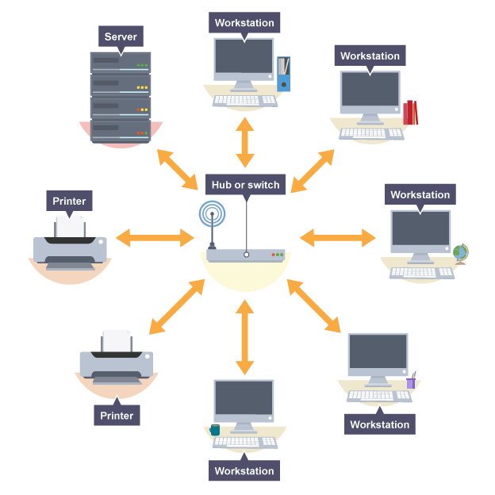

In a star network each device on the network has its own cable that connects to a switch or hub. A hub sends every packet of data to every device, whereas a switch only sends a packet of data to the destination device.

^A star network, where devices are connected to a central hub or switch^ Advantages and disadvantages of a star network The advantages of a star network are:
it is very reliable – if one cable or device fails then all the others will continue to work
it is high-performing as no data collisions can occur
The disadvantages of a star network are:
it is expensive to install as this type of network uses the most cable (network cable is expensive)
extra hardware is required (hubs or switches) which adds to cost
if a hub or switch fails, all the devices connected to it will have no network connection